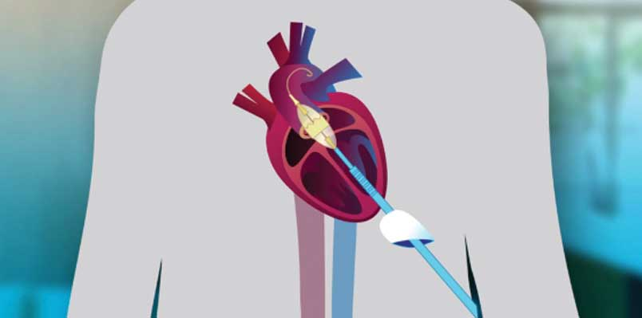

TAVR is minimally invasive surgery that repairs old or damaged valves without the need to remove them. Instead, a replacement valve is fitted directly into the original aortic valve’s location. Once the replacement valve is in place, it pushes the old valve leaflets out of the way and the tissue in the new valve takes over the job of regulating blood flow.
In the United States, TAVR was initially approved for patients for whom open-heart surgery was too high of a risk. Because of procedure success, the FDA has approved the procedure for more patients, not just those who could not withstand open heart surgery. Your heart specialist is the best person to help you determine if TAVR is right for you.
Everyone's health and circumstances are different so it’s hard to predict the amount of care you will need after a TAVR procedure. Many patients who undergo TAVR report needing 1 to 3 months to fully recover from surgery.
Typically, a catheter is inserted through the groin and is passed up through the blood vessels to your heart. The new heart valve is then advanced through the tube into the correct position within your existing aortic valve. The new valve then expands into its working size and takes over the job of regulating blood flow while pushing the old, diseased valve out of the way.
Most patients experience a 1- to 2-day hospital stay. If the TAVR procedure requires a chest incision, their stay may be longer.
Generally there are no specific limitations after the procedure. Patients typically sit up within a few hours after the procedure and can walk the same day. Rehab services may be encouraged. Restrictions on heavy lifting are typically advised for a while.
There are some tests that need to be done to see if you qualify for the TAVR procedure. This is called a screening and takes about 4 weeks to complete. Screening tests include:
You may need some additional tests. For more information about any of these tests talk to a specialist.